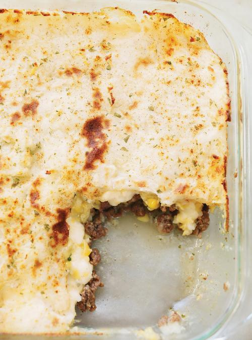

Shepherd's Pie
Home

Description
Enjoy this classic Canadian Shepherd's Pie with its with ground beef
on the bottom layer, canned (creamed) sweetcorn in the middle,
and mashed potato on top.
Ingredients
- 4 cups (680 g) russet or Yukon Gold potatoes, peeled and cubed
- 1/4 cup (55 g) butter, approximately
- 1/2 cup (125 ml) milk, approximately
- 1 onion, finely chopped
- 1 lb (450 g) lean or semi-lean ground beef
- 1 can (19 oz/540 ml) creamed corn
- Paprika, to taste
- Dried parsley, to taste
Steps
-
In a large pot of salted water, cook the potatoes
until very tender. Drain.
-
With a masher, coarsely crush the potatoes with at least
2 tbsp of the butter. With an electric mixer, purée with the milk.
Season with salt and pepper. Set aside.
-
With the rack in the middle position, preheat the oven to 375°F (190°C).
-
In a large skillet, brown the onion in the remaining butter.
Add the meat and cook until golden brown. Season with salt and pepper.
Remove from the heat.
-
Lightly press the meat into the bottom of an 8-inch (20 cm)
square baking dish. Cover with the corn and the mashed potatoes.
Sprinkle with paprika and parsley.
-
Bake for 30 minutes. Finish cooking under the broiler.
Let cool for 10 minutes.
Note
This recipe doubles easily.